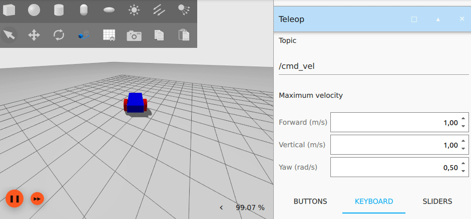

IoT Lab Lecture 5 - 12/04/2023
In this lecture, we are finally getting started with the second part of our lab course, by introducing Gazebo!
We will take what we have learnt in the past lectures about ROS, and move it to a complex simulation enviroment which allows us
to properly test the drones we control with ROS.
Before getting into the code part using ROS, let's take a moment to talk about Gazebo.
NOTE: it is expected at this point that you are able to create and configure
ROS packages by heart.
If you're still having doubts on how to build a package, create a node within it and link it, it is highly suggested
to look back at Lecture 2.
It is totally fine if you don't remember the exact syntax for scripting topics, services and actions. Feel free to
go back to the past lectures for that, or use the official ROS Humble documentation.
Gazebo
Gazebo is an open-source software used for 3D robotic-simulation.
It allows the developer to test their solution in a simulated environment before deploying them in the real world.
Gazebo is a completely independent application from ROS, but, just like ROS, uses topics and services to allow for
communication and scripting between entities in the simulation.
If you have ROS already installed, you can install everything you will need to use Gazebo by writing:
sudo apt-get install ros-${ROS_DISTRO}-ros-gz
This will install Gazebo, along with ros_gz_bridge, which will allow us to bridge the enviroment of Gazebo with the one of ROS. If you are using the version we've been using so far with ROS (Humble), this command should automatically install Gazebo Fortress as a default version.Once you do that, we can start an empty world by typing:
ign gazebo default.sdf
This will create an empty world, which we will use to get more confident with the enviroment of Gazebo.If you want instead to just have fun with Gazebo and learn by trial and error, just type
ign gazebo
And this will pop up a new window where you can choose from multiple examples to run, just like this. Let's go back to our default world.Gazebo GUI
Gazebo offers multiple tools to both control and model the 3D world.
Our interest is mainly in controlling the world in our simulation, but being able to model an already existing world can be useful.
On the top left of your screen you have your tool bar. This can be used to spawn simple models, and move existing ones.
On the right side, you have your plugin panel.
By default, your instance will start with two plugins: the Component Inspector (top one), and the Entity Tree (bottom one).
There are multiple additional plugins that you can spawn, and you can do that by clicking on the three dots in the top right.
SDF - Simulation Description Format
Gazebo generates 3D world by reading from Simulation Description Format (SDF) files.
SDF is an XML format which is used to describe objects and environments for robot simulations and visualizations.
Writing SDF files from scrap can be really teadious, but we won't be doing that for the most part.
If you want to create your own world, the best course of action would be to find an already existing minimal world, and to build on top of that.
You can do that by opening an already existing world in Gazebo, editing it, end then export it.
Let's export our default world and take a look at the file in output.
On the top left: "Save world as..." and store it in a directory of your choice.
What if we want to add something to this world?
If you look closely, we can see that currently our world has already one model in it. Which is the ground plane.
Intuitively, you may have figured out that if we want to add another model, we will need to create a new <model> tag.
For advanced modelling, it would be a good idea to find a 3D modelling software which allows you to export your model to an SDF format (if you are familiar with
Blender, there is a plugin for it to do that), but for the time being, we will just build a simple robot with two wheels, to get used to editing SDF files.
Building a Robot
During this part, we will build a robot step by step. And visualize the result in Gazebo ass we add things. Get ready to open and close the application multiple times!
Let's start!
In SDF, every model is a a group of links, which can be then connected together using joints.
We can define the main body of the robot with the following tags! Let's add them alognside the ground plane model.
<model name='vehicle_blue' canonical_link='chassis'>
<pose relative_to='world'>0 0 0 0 0 0</pose>
<link name='chassis'>
<pose relative_to='__model__'>0.5 0 0.4 0 0 0</pose>
<visual name='visual'>
<geometry>
<box>
<size>2.0 1.0 0.5</size>
</box>
</geometry>
<!--let's add color to our link-->
<material>
<ambient>0.0 0.0 1.0 1</ambient>
<diffuse>0.0 0.0 1.0 1</diffuse>
<specular>0.0 0.0 1.0 1</specular>
</material>
</visual>
<collision name='collision'>
<geometry>
<box>
<size>2.0 1.0 0.5</size>
</box>
</geometry>
</collision>
<inertial> <!--inertial properties of the link mass, inertia matix-->
<mass>1.14395</mass>
<inertia>
<ixx>0.095329</ixx>
<ixy>0</ixy>
<ixz>0</ixz>
<iyy>0.381317</iyy>
<iyz>0</iyz>
<izz>0.476646</izz>
</inertia>
</inertial>
</link>
</model>
Here, we have defined our robot consisting of one single link.Inside the link, we define, with additional tags, multiple properties:
-First of all, the visual properties, using the visual tag. Which define how the link will appear in the 3D environment. The gometry tag defines the shape, while the material tag defines the coloring properties.
-We have then our collision tag, which defines the colliding properties of this link.
-We then define the intertia properties of the link, using the inertial tag.
No need to go further in details with this one.
Your Gazebo simulation should look something like this:
 What if we want to add wheels to our robot?
What if we want to add wheels to our robot?More links! And joints!
Let's do it.
The code for the wheels is the following:
<link name='left_wheel'>
<pose relative_to="chassis">-0.5 0.6 0 -1.5707 0 0</pose>
<inertial>
<mass>1</mass>
<inertia>
<ixx>0.043333</ixx>
<ixy>0</ixy>
<ixz>0</ixz>
<iyy>0.043333</iyy>
<iyz>0</iyz>
<izz>0.08</izz>
</inertia>
</inertial>
<visual name='visual'>
<geometry>
<cylinder>
<radius>0.4</radius>
<length>0.2</length>
</cylinder>
</geometry>
<material>
<ambient>1.0 0.0 0.0 1</ambient>
<diffuse>1.0 0.0 0.0 1</diffuse>
<specular>1.0 0.0 0.0 1</specular>
</material>
</visual>
<collision name='collision'>
<geometry>
<cylinder>
<radius>0.4</radius>
<length>0.2</length>
</cylinder>
</geometry>
</collision>
</link>
<!--The same as left wheel but with different position-->
<link name='right_wheel'>
<pose relative_to="chassis">-0.5 -0.6 0 -1.5707 0 0</pose> <!--angles are in radian-->
<inertial>
<mass>1</mass>
<inertia>
<ixx>0.043333</ixx>
<ixy>0</ixy>
<ixz>0</ixz>
<iyy>0.043333</iyy>
<iyz>0</iyz>
<izz>0.08</izz>
</inertia>
</inertial>
<visual name='visual'>
<geometry>
<cylinder>
<radius>0.4</radius>
<length>0.2</length>
</cylinder>
</geometry>
<material>
<ambient>1.0 0.0 0.0 1</ambient>
<diffuse>1.0 0.0 0.0 1</diffuse>
<specular>1.0 0.0 0.0 1</specular>
</material>
</visual>
<collision name='collision'>
<geometry>
<cylinder>
<radius>0.4</radius>
<length>0.2</length>
</cylinder>
</geometry>
</collision>
</link>
We now need to add a third wheel in the front (caster wheel).To do that, we create a frame and attach the wheel to it.
Just copy this additional tags for it:
<frame name="caster_frame" attached_to='chassis'>
<pose>0.8 0 -0.2 0 0 0</pose>
</frame>
<!--caster wheel-->
<link name='caster'>
<pose relative_to='caster_frame'/>
<inertial>
<mass>1</mass>
<inertia>
<ixx>0.016</ixx>
<ixy>0</ixy>
<ixz>0</ixz>
<iyy>0.016</iyy>
<iyz>0</iyz>
<izz>0.016</izz>
</inertia>
</inertial>
<visual name='visual'>
<geometry>
<sphere>
<radius>0.2</radius>
</sphere>
</geometry>
<material>
<ambient>0.0 1 0.0 1</ambient>
<diffuse>0.0 1 0.0 1</diffuse>
<specular>0.0 1 0.0 1</specular>
</material>
</visual>
<collision name='collision'>
<geometry>
<sphere>
<radius>0.2</radius>
</sphere>
</geometry>
</collision>
</link>
With this, we first define a new frame for our model. And then attach the caster wheel link to it.Frames are important because they allow you to define rotations and position relative to them, allowing you to have moving and rotating parts independently from the main frame.
At this point, your robot should look like this:
 Great! This defines almost everything we need.
Great! This defines almost everything we need.If you start your simulation now, your robot will fall to pieces though.
This is because we have not defined any joint yet.
Let's also do that!
This is the code for all three joints (one for each wheel):
<joint name='left_wheel_joint' type='revolute'>
<pose relative_to='left_wheel'/>
<parent>chassis</parent>
<child>left_wheel</child>
<axis>
<xyz expressed_in='__model__'>0 1 0</xyz> <!--can be defined as any frame or even arbitrary frames-->
<limit>
<lower>-1.79769e+308</lower> <!--negative infinity-->
<upper>1.79769e+308</upper> <!--positive infinity-->
</limit>
</axis>
</joint>
<joint name='right_wheel_joint' type='revolute'>
<pose relative_to='right_wheel'/>
<parent>chassis</parent>
<child>right_wheel</child>
<axis>
<xyz expressed_in='__model__'>0 1 0</xyz>
<limit>
<lower>-1.79769e+308</lower> <!--negative infinity-->
<upper>1.79769e+308</upper> <!--positive infinity-->
</limit>
</axis>
</joint>
<joint name='caster_wheel' type='ball'>
<parent>chassis</parent>
<child>caster</child>
</joint>
As you can see, the front and left wheel have a joint of type revolute,
this allows the wheel to have one rotational degree of freedom, which is later defined.
Moving the robot
Models in Gazebo are static by default. With no scripted behaviour whatsoever.
If you want to add some behaviour to your world, you will have to add plugins to your models.
For our robot, we will use a plugin named diff_drive to control our robot.
After your last joint, add the following code:
<plugin
filename="libignition-gazebo-diff-drive-system.so"
name="ignition::gazebo::systems::DiffDrive">
<left_joint>left_wheel_joint</left_joint>
<right_joint>right_wheel_joint</right_joint>
<wheel_separation>1.2</wheel_separation>
<wheel_radius>0.4</wheel_radius>
<odom_publish_frequency>1</odom_publish_frequency>
<topic>cmd_vel</topic>
</plugin>
Here, we define our plugin, with different properties set.To know how to properly set up a plugin, you can refer to their official documentation, for the case of our DiffDrive: here.
All the built plugins available with the installation of Gazebo can be found in the following directory:
/usr/lib/x86_64-linux-gnu/ign-gazebo-6/plugins
Gazebo plugins are defined in C++. If you want to implement custom behaviours to your model, you will have to write C++ code. For the rest of the course though, we will be using only already built plugins.Something familiar should pop up here in the plugin snippet: cmd_vel!
Guess what? This plugin allows the robot to be moved by listening to a particular topic, in this case, /cmd_vel!
We can send data to that topic from ROS really easily, with some additional steps.
Before doing that, you can test if your robot works independently from ROS.
In your side panel you can add a new plugin called teleop. This plugins allows you to publish data to a topic just like the teleop of turtlesim.  The resulting sdf file for this part can be downloaded directly here: vehicle_blue_world.sdf.
For what was covered in this part, these links may come in hand as future reference:
-Official SDF documentation: here.
-List of all the plugins installed by default with Gazebo, with their source: here.
-Ignition Gazebo API: here.
ROS and Gazebo - Bridging the two environments together!
As stated before, Gazebo uses topics and services just like ROS.
Just like ROS, Gazebo has its own syntax to list and call topics and services by console.
We are only interested in two main commands at this time: listing and getting infos from topics/services.
To list topics, just type:
ign topic -l
and, you may have guessed:ign service -l
to list services.Note that in Gazebo, you can only list topics that have a publisher for it. If you have a topic with only subscribers, that topic won't show in your list. If you are unsure of what topic to bridge from a plugin and they don't appear in your list, please refer to the official plugin documentation too see what topics are correct (most plugins have a default topic, which can be redefined with a particular tag). To get info about a topic, can type:
ign topic -i --topic [topic_name]
And this gives you information about the topic. Same thing applies for services.Let's check what we see if we try to get more info about /cmd_vel. With this command, just like for ROS, we are able to see the type of message the topic expects to receive.
Gazebo additionally assigns for each topic a socket where messages can be sent. We don't care about this part.
The type of the message will be important in order to bridge it to ROS topics.
It's time to create the bridge!
To do that, we will be using a ROS application which you should have already installed, called ros_gz_bridge.
To bridge a topic, you need to input the following command:
ros2 run ros_gz_bridge parameter_bridge NAME_OF_THE_TOPIC@ROS_INTERFACE@GAZEBO_INTERFACE
This will create a bi-directional bridge between the two environment for the given topic.To know what interface to use for one end, given that you know the other one, you can check the official documentation of ros_gz_bridge on GitHub, here.
Note that the namespaces used for Gazebo there refer to Gazebo Garden. All the namespaces in Fortress begin with ignition instead of gz
Let's say that we want to bridge our /cmd_vel topic, what we have to write is:
ros2 run ros_gz_bridge parameter_bridge /cmd_vel@geometry_msgs/msg/Twist@ignition.msgs.Twist
If you typed everything correct, you should have the bridge correctly created in both directions, just like this: And that's it! If you now try to list ROS topics, you will see that /cmd_vel is there!Exercise 6 - Bridge and play
You are here requested to create a ROS project, which launches the Gazebo world we just created, plays the simulation,
and controls the vehicle to move in a squared pattern. When the movement is complete, the simulation should pause.
It is not required to perform an actual square with the vehicle, you can simply eyeball it. Any trajectory will do just fine.
ros_gz_bridge is just a ROS node, that can be executed by a launch file just like for other nodes.
You can pass the string to configure the bridge by adding the parameter arguments=["arg1", "arg2", ...] to your
Node object.
Feel free to take a look at the previous lecture to see how launch files are written.
To help you get started, this launch file will immediately start Gazebo when run: launch_gazebo.py
ros_gz_bridge currently supports bridge for only one service, which is the one we need to start and stop the simulation.
Refer to the example on the GitHub page to find out how to do that.
Good luck!
So, this exercise was here for you to get used to bridging nodes using launcher files.
The exercise itself shouldn't have been that hard to complete, after you managed to setup your launch file to start all the bridges
and your node.
The solution for the launch file is the following: launch_gazebo.py
This is the file for controlling the vehicle: vehicle_controller.py
The sdf file we're using for the world is the same produced by the lecture, which is the following: vehicle_blue_world.sdf
EXTRA: with the knowledge of the patrolling turtle exercise, would you be able to move
the vehicle up to a precise point in space?
Information about the vehicle position are published to /model/vehicle_blue/odometry. Can you use quaternions? Give it a try!
Adding a lidar sensor to our robot
What if instead of simply moving our robot, we would want it to scan the area around? So that it can move in a "smart" way,
and avoid obstacles?
To do that, we can add a <sensor> tag to our robot.
By using this tag, we will add a "ligt detection and ranging" (lidar) sensor to our robot.
First of all, let's add a wall to our world, so that we can test the functionality of the sensor later on.
Use this code alongside your vehicle model:
<model name='wall'>
<static>true</static>
<pose>5 0 0 0 0 0</pose><!--pose relative to the world-->
<link name='box'>
<pose/>
<visual name='visual'>
<geometry>
<box>
<size>0.5 10.0 2.0</size>
</box>
</geometry>
<!--let's add color to our link-->
<material>
<ambient>0.0 0.0 1.0 1</ambient>
<diffuse>0.0 0.0 1.0 1</diffuse>
<specular>0.0 0.0 1.0 1</specular>
</material>
</visual>
<collision name='collision'>
<geometry>
<box>
<size>0.5 10.0 2.0</size>
</box>
</geometry>
</collision>
</link>
</model>
Now, under the <world> tag, add these three plugins, which will be necessary for the lidar scanner to work:
<plugin
filename="ignition-gazebo-physics-system"
name="ignition::gazebo::systems::Physics">
</plugin>
<plugin
filename="ignition-gazebo-scene-broadcaster-system"
name="ignition::gazebo::systems::SceneBroadcaster">
</plugin>
<plugin filename="ignition-gazebo-sensors-system"
name="ignition::gazebo::systems::Sensors">
<render_engine>ogre2</render_engine>
</plugin>
Once you've done that, we're going first to add a frame for our lidar scanner. This should go above your chassis link.
<frame name="lidar_frame" attached_to='chassis'>
<pose>0.8 0 0.5 0 0 0</pose>
</frame>
And this, inside of the chassis link.
<sensor name='gpu_lidar' type='gpu_lidar'>
<pose relative_to='lidar_frame'>0 0 0 0 0 0</pose>
<topic>lidar</topic>
<update_rate>10</update_rate>
<ray>
<scan>
<horizontal>
<samples>640</samples>
<resolution>1</resolution>
<min_angle>-1.396263</min_angle>
<max_angle>1.396263</max_angle>
</horizontal>
<vertical>
<samples>1</samples>
<resolution>0.01</resolution>
<min_angle>0</min_angle>
<max_angle>0</max_angle>
</vertical>
</scan>
<range>
<min>0.08</min>
<max>10.0</max>
<resolution>0.01</resolution>
</range>
</ray>
<always_on>1</always_on>
<visualize>true</visualize>
</sensor>
That'it! If you start your simulation again you should have a Gazebo topic called /lidar which publishes the data of the lidar scanner.
Using the lidar to scan an area
One cool thing about lidar scanner is that they can be used to create a 3d map of the environment around our robot. This information, combined with ROS coding, allows you to create
"smart" robots which can navigate complex areas with multiple obstacles.
This won't be needed for the rest of the course, but if you want to see the information being captured live by your scanner, we can use a tool which comes with ROS called
rviz2. Just simply type the name of the application on a new sourced terminal, and you should be prompted with a view like this:
To view our information collected thanks to our lidar scanner, we first have to bridge that topic to ROS.
ros2 run ros_gz_bridge parameter_bridge /lidar@sensor_msgs/msg/LaserScan@ignition.msgs.LaserScan
After that. We can add the /lidar topic to our Rviz applcation.Just click the Add button on the bottom left corner, then go to the "By topic" tab and add the /lidar topic. After that, all we need to do is to fix our frame of reference to our lidar sensor, and that will do the trick. Our frame needs to point to our lidar scanner, like this:
 Some red dots should start appearing on your screen. They are the points that the lidar scanner is currently hitting in the simulated environment.
Some red dots should start appearing on your screen. They are the points that the lidar scanner is currently hitting in the simulated environment.
If you want to go more into details on how you can map your enviornment, you may want to look on how to define a fixed frame in your simulation, so that the information of the rays can be stored with respect to the fixed frame, thus creating a 3D map of the scanned area.
We're only interested in collecting data to account for simple collisions at this point, so that won't be a requirement.
Let's now try to use the data collected by the lidar scanner to prevent the robot from hitting the wall.
Exercise 7 - Don't hit the wall!
You are here requested to modify the code of the previous exercise as follows: the vehicle must now move towards the wall, and stop when it gets too close.
The lidar scanner sends multiple rays in front of him to detect for an incoming collision. You can read the ranges of all those rays by reading the values of
.ranges inside of a LaserScan message.
Solution not discussed in class yet.
Will be available here later this week.
Conclusions
That's it. After this lecture, you should start getting an idea on how Gazebo works, and how it can be used in conjuction with ROS.
Gazebo is a really complex application, with lots of moving parts, but for those (i.e., us) who are just interested in controlling
a simulated environment, there is really not much added in terms of complexity to what we have seen so far.
All the code that we have written so far for the TurtleSim can be translated easily to a Gazebo robot with few lines of code.
The additional complexity now is given by the fact that we are working in a 3D enviroment. Movements and in particular
rotations are way more complex to calculate, and probably harder to visualize if you are used to work in a 2D space.
In the next lecture, we will use Gazebo and ROS to pilot an X3 drone in a 3D space.
See you soon!